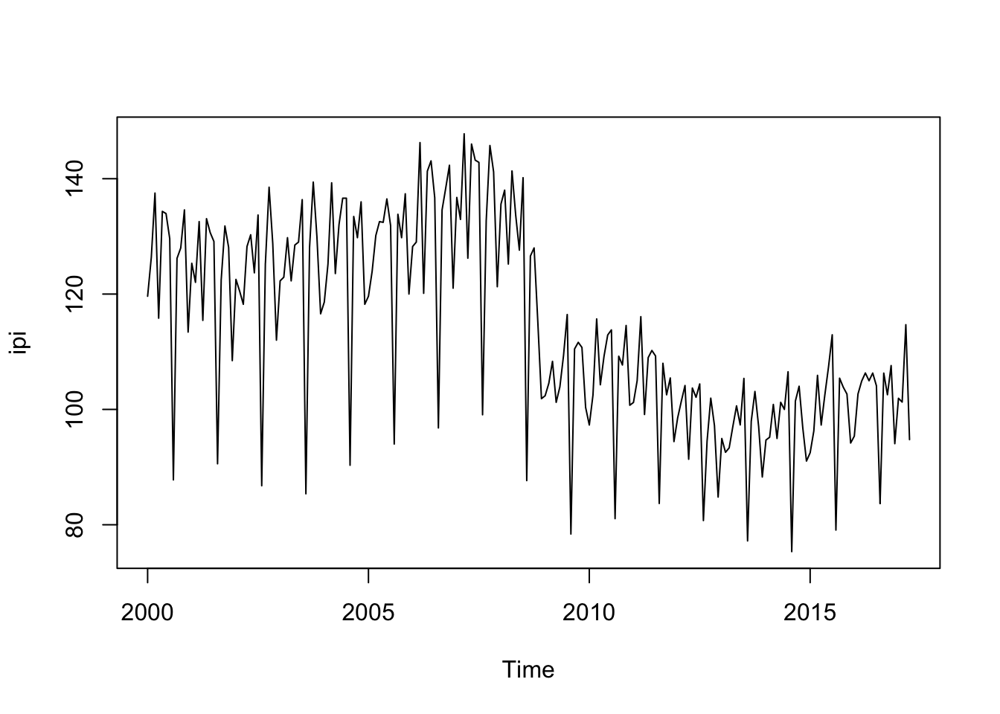

Use UComp!
Here there are some examples run with package UComp, for the automatic modelling of Unobserved Components models a la Harvey (1989). The absolute novelty of this package is that it provides an automatic identification of UC models, though particular models may be estimated, if desired. The package also perform outlier detection, may identify cycles of period longer than one year and allows for models with exogenous inputs.
The library is composed of just a few functions to perform a comprehensive analysis of time series:
- UC: runs everything
- UCsetup: creates UComp objects
- UCmodel: runs UCsetup, estimates/identifies model and produce forecasts
- UCvalidate: runs diagnositics checks and show estimation table
- UCfilter: filters the data and computes states and their covariance matrices
- UCsmooth: as UCfilter, but smoothing the data
- UCdisturb: runs the disturbance smoother
- UCcomponents: estimate components (trend, seasonal, irregular, etc.)
The inputs to UC, UCsetup and UCmodel are the same and control how the rest of functions work (check the manual and examples below).
Now, the examples. First, just load the library and some data (monthly Spanish industrial production index) from January 2000 to December 2019. the last year of data is reserved to check forecasting performance.
library(UComp)## Loading required package: Rcppload(url("https://github.com/djpedregal/djpedregal.github.io/blob/master/ipi.Rdata?raw=true"))
ipi = ts(y[1 : 208], start = 2000, frequency = 12)
plot(ipi)
The call could be as simple as the next to estimate the optimal model and plot the components. The output shows the estimated models with their information criteria values and the table with the estimates and some diagnostics tests.
m = UC(log(ipi))## ------------------------------------------------------------
## Identification started WITHOUT outlier detection
## ------------------------------------------------------------
## Model AIC BIC AICc
## ------------------------------------------------------------
## none/none/none/arma(0,0): -0.8407 -0.8247 -0.8407
## none/none/equal/none: 1.2222 1.4147 1.2270
## none/none/equal/arma(0,0): -0.7102 -0.5016 -0.7054
## none/none/different/none: -1.1573 -0.8845 -1.1429
## none/none/different/arma(0,0): 0.4555 0.7444 0.4700
## rw/none/none/none: -0.8572 -0.8412 -0.8572
## rw/none/none/arma(0,0): -1.5203 -1.4882 -1.5203
## rw/none/equal/none: -2.5545 -2.3459 -2.5497
## rw/none/equal/arma(0,0): -2.7475 -2.5229 -2.7379
## rw/none/different/none: -2.7614 -2.4726 -2.7470
## rw/none/different/arma(0,0): -2.7822 -2.4773 -2.7630
## llt/none/none/none: -0.7945 -0.7464 -0.7945
## llt/none/none/arma(0,0): -1.4430 -1.3788 -1.4430
## llt/none/equal/none: -2.4688 -2.2281 -2.4591
## llt/none/equal/arma(0,0): -2.6311 -2.3744 -2.6215
## llt/none/different/none: -2.6807 -2.3598 -2.6615
## llt/none/different/arma(0,0): -2.7040 -2.3670 -2.6847
## dt/none/none/none: -0.8208 -0.7727 -0.8208
## dt/none/none/arma(0,0): -1.4749 -1.4107 -1.4749
## dt/none/equal/none: -2.5232 -2.2825 -2.5136
## dt/none/equal/arma(0,0): -2.6026 -2.3459 -2.5930
## dt/none/different/none: -2.7054 -2.3845 -2.6862
## dt/none/different/arma(0,0): -2.7569 -2.4200 -2.7377
## ------------------------------------------------------------
## Identification time: 1.81076 seconds
## ------------------------------------------------------------
## -------------------------------------------------------------
## Concentrated Maximum-Likelihood
## Model: rw/none/different/arma(0,0)
## Periods: 12.0 / 6.0 / 4.0 / 3.0 / 2.4 / 2.0
## Q-Newton: Function convergence
## (*) concentrated out parameter
## -------------------------------------------------------------
## Param |T| P-value |Grad|
## -------------------------------------------------------------
## Level: 2.01e-04 nan nan 4.13e-05
## Seas(12.0): 9.03e-07 nan nan 2.60e-05
## Seas(6.0): 1.56e-06 nan nan 2.36e-05
## Seas(4.0): 1.76e-06 nan nan 2.64e-05
## Seas(3.0): 5.32e-05 nan nan 3.85e-05
## Seas(2.4): 2.14e-05 nan nan 2.99e-05
## Seas(2.0): 6.40e-07 nan nan 2.21e-05
## Irregular: 3.45e-04* nan nan nan
## -------------------------------------------------------------
## AIC: -2.7822 BIC: -2.4773 AICc: -2.7630
## Log-Likelihood: 308.3510
## -------------------------------------------------------------
## Summary statistics:
## -------------------------------------------------------------
## Missing data:
## Q( 1): 0.8665 Q( 4): 4.9369
## Q( 8): 11.7859 Q(12): 17.5830
## Bera-Jarque: 24.2265 P-value: 0.0000
## H( 66): 0.9878 P-value: 0.9605
## Outliers (>2.7 ES): 4
## Q( 1): 1.7276 Q( 4): 6.1233
## Q( 8): 9.4265 Q(12): 28.7418
## Bera-Jarque: 1.0223 P-value: 0.5998
## H( 66): 0.8960 P-value: 0.6569
## -------------------------------------------------------------
## plot(m$comp)
A different call, more complex, would be as follows (just one model is estimated, the forecasting horizon is fixed at 24 months, verbose output is avoided, see the full set of options in the documentation). As can be easily seen, the diagnostics tests indicate that this model is completely inappropriate:
m = UC(log(ipi), model = "rw/equal/arma(0,0)", h = 24, verbose = FALSE)## -------------------------------------------------------------
## Concentrated Maximum-Likelihood
## Model: rw/none/equal/arma(0,0)
## Periods: 12.0 / 6.0 / 4.0 / 3.0 / 2.4 / 2.0
## Q-Newton: Function convergence
## (*) concentrated out parameter
## -------------------------------------------------------------
## Param |T| P-value |Grad|
## -------------------------------------------------------------
## Level: 1.89e-04 nan nan 1.05e-05
## Seas(All): 8.36e-07 nan nan 7.08e-06
## Irregular: 0.0011* nan nan nan
## -------------------------------------------------------------
## AIC: -2.7475 BIC: -2.5229 AICc: -2.7379
## Log-Likelihood: 299.7431
## -------------------------------------------------------------
## Summary statistics:
## -------------------------------------------------------------
## Missing data:
## Q( 1): 6.4970 Q( 4): 27.1963
## Q( 8): 41.5867 Q(12): 73.1916
## Bera-Jarque: 6.8197 P-value: 0.0330
## H( 66): 0.9540 P-value: 0.8488
## Outliers (>2.7 ES): 4
## Q( 1): 8.1112 Q( 4): 19.7049
## Q( 8): 27.2471 Q(12): 76.9467
## Bera-Jarque: 0.4328 P-value: 0.8054
## H( 66): 0.8748 P-value: 0.5883
## -------------------------------------------------------------
## Something that is very interesting in this case is the estimation with Easter and calendar effects (already loaded in matrix u) and with outlier detection. Check out the diagnostics and now to see that this model is much more adequate:
m = UC(log(ipi), u = u, outlier = 4)## ------------------------------------------------------------
## Identification started WITH outlier detection
## ------------------------------------------------------------
## Model AIC BIC AICc
## ------------------------------------------------------------
## none/none/none/arma(0,0): 5.8721 5.9041 5.8721
## none/none/equal/none: 7.5297 7.7383 7.5345
## none/none/equal/arma(0,0): -0.6501 -0.4094 -0.6405
## none/none/different/none: -1.3761 -1.0713 -1.3569
## none/none/different/arma(0,0): 0.5289 0.8498 0.5481
## rw/none/none/none: 4.3441 4.3922 4.3441
## rw/none/none/arma(0,0): -1.8637 -1.6551 -1.8588
## rw/none/equal/none: -3.8845 -3.6277 -3.8749
## rw/none/equal/arma(0,0): -3.9097 -3.6369 -3.8953
## rw/none/different/none: -3.8561 -3.5191 -3.8369
## rw/none/different/arma(0,0): -3.8736 -3.5206 -3.8496
## llt/none/none/none: -0.7858 -0.7056 -0.7858
## llt/none/none/arma(0,0): -1.8302 -1.5734 -1.8206
## llt/none/equal/none: -3.7546 -3.4818 -3.7402
## llt/none/equal/arma(0,0): -3.7761 -3.4713 -3.7569
## llt/none/different/none: -3.7241 -3.3711 -3.7000
## llt/none/different/arma(0,0): -3.7274 -3.3423 -3.6985
## dt/none/none/none: -0.8115 -0.7313 -0.8115
## dt/none/none/arma(0,0): -1.7716 -1.5469 -1.7619
## dt/none/equal/none: -3.8292 -3.5404 -3.8148
## dt/none/equal/arma(0,0): -3.8546 -3.5497 -3.8353
## dt/none/different/none: -3.8007 -3.4317 -3.7719
## dt/none/different/arma(0,0): -3.8254 -3.4403 -3.7966
## ------------------------------------------------------------
## Identification time: 9.28477 seconds
## ------------------------------------------------------------
## -------------------------------------------------------------
## Concentrated Maximum-Likelihood
## Model: rw/none/equal/arma(0,0) + inputs
## Periods: 12.0 / 6.0 / 4.0 / 3.0 / 2.4 / 2.0
## Q-Newton: Function convergence
## (*) concentrated out parameter
## -------------------------------------------------------------
## Param |T| P-value |Grad|
## -------------------------------------------------------------
## Level: 1.20e-04* nan nan nan
## Seas(All): 1.21e-06 9.9135 0.0000 1.25e-05
## Irregular: 8.15e-05 0.7123 0.4771 1.66e-05
## Beta(1): -0.0807 16.3866 0.0000 0.00e+00
## Beta(2): 0.0080 21.0155 0.0000 0.00e+00
## LS108: -0.1008 5.6277 0.0000 0.00e+00
## -------------------------------------------------------------
## AIC: -3.9097 BIC: -3.6369 AICc: -3.8953
## Log-Likelihood: 423.6118
## -------------------------------------------------------------
## Summary statistics:
## -------------------------------------------------------------
## Missing data:
## Q( 1): 0.0714 Q( 4): 0.8036
## Q( 8): 7.5238 Q(12): 9.9888
## Bera-Jarque: 4.1827 P-value: 0.1235
## H( 66): 0.9586 P-value: 0.8641
## Outliers (>2.7 ES): 3
## Q( 1): 0.2998 Q( 4): 1.6344
## Q( 8): 6.1335 Q(12): 8.7076
## Bera-Jarque: 0.1979 P-value: 0.9058
## H( 66): 0.9586 P-value: 0.8641
## -------------------------------------------------------------
## plot(m$comp)Beta(1) and Beta(2) are the parameter estimates for Easter and the calendar effects and there is one oulier detected in observations 108 as a level shift.
Finally, forecasts and their variances are stored in fields yFor and yForV, respectively. The following plot shows forecasts and their 95% confidence bands.
plot(m$yFor, ylim = c(4.3, 4.85))
lines(m$yFor + 2 * sqrt(m$yForV), col = "red")
lines(m$yFor - 2 * sqrt(m$yForV), col = "red")